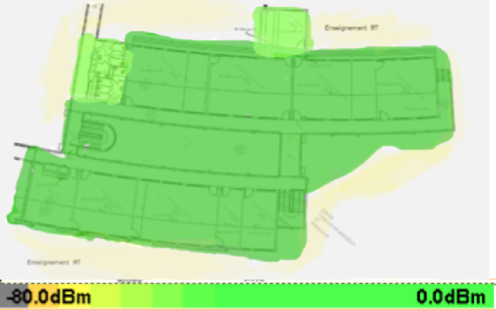
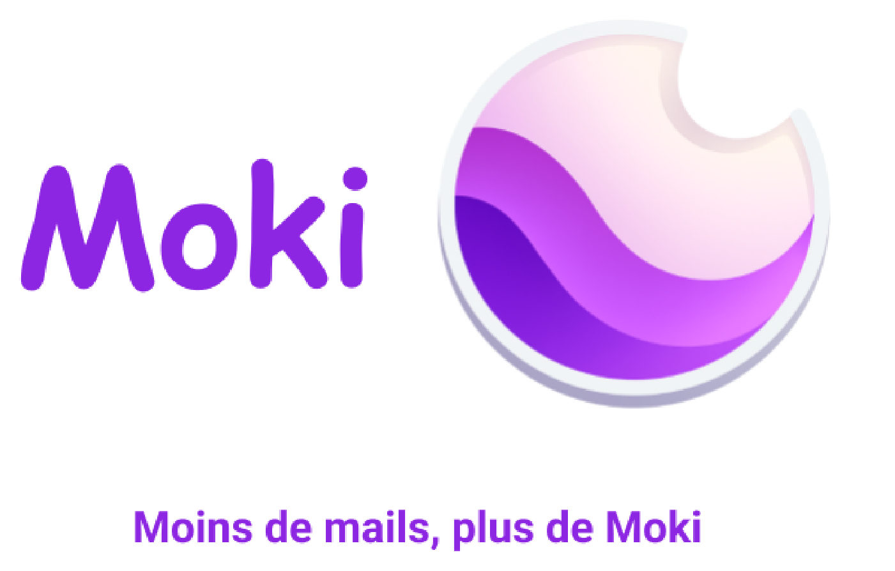
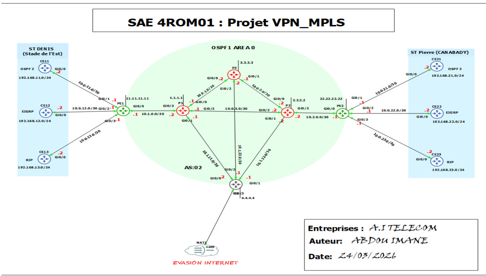

ePortfolio · Réseaux & Télécommunications
ABDOU IMANE
Chargée d'études FTTH chez KYNTUS · Étudiante en BUT Réseaux & Télécommunications (parcours ROM) · IUT de La Réunion
En bref
Projets phares

SAÉ 1.03Découvrir un dispositif de transmission : audit de la couverture Wi-Fi
Audit complet du Wi-Fi du département R&T de l'IUT : cartographie, puissance, SNR, canaux, débit et recommandations chiffrées.
Découvrir le projet
SAÉ 3.02Développer des applications communicantes : Moki
Application web de messagerie pour étudiants (React, Node.js, MongoDB). Mon rôle : cahier des charges, architecture, charte graphique, suivi et rapports.
Découvrir le projet
SAÉ 4.ROM.01Déployer une infrastructure opérateur et ses services clients
Backbone MPLS L3VPN pour trois enseignes (VRF, MP-BGP, OSPF, EIGRP, RIP), évasion Internet centralisée en NAT et tests d'isolation et de résilience.
Découvrir le projetExplorer mon portfolio
Formation ›
Du Bac STI2D au BUT R&T, en passant par un BTS Électrotechnique en apprentissage.
Expériences ›
Du cuivre à la fibre : technicienne terrain puis Chargée d'études FTTH.
Compétences ›
Réseaux, télécoms, conception, terrain et transmission du savoir-faire.
Certifications ›
PIX et MOOC de l'ANSSI.
Mes projets ›
Toutes les SAÉ illustrées, avec accès aux rapports complets.
Contact ›
Une question, une opportunité ? Écrivez-moi.